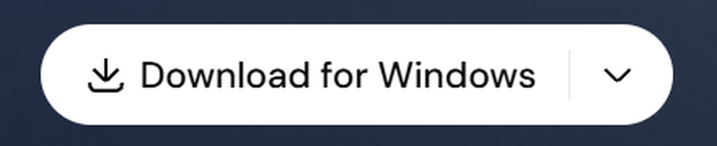

写给谁
这份指引面向会用 Windows、但没接触过命令行的人。全程点按、复制粘贴，不需要打开命令提示符。
整个流程装两样东西：DeepSeek Harness 和一个本地文件检索插件。 索引和检索都在本机完成，文件不上传。
中途出错先往下翻，遇到卡住的地方，把屏幕截图发给出指引给你的人。
下载
页面上有一个写着「下载 Windows 版」的按钮，直接点它。
点完浏览器开始下载，下载栏里会出现一个 .exe 文件。下载完先不要急着双击，先看第 2 步。

别下错：认准文件名里的 win 或者 Windows 字样，
正常情况是一个 .exe。
如果下载下来不是 .exe，说明点错了，回到页面重新下载 Windows 版。
运行安装程序
在下载栏里点那个 .exe，或者去「下载」文件夹双击它。
屏幕上可能会跳出一个蓝色的窗口，写着「Windows 已保护你的电脑」。
这是 Windows 对不常见的小众软件的例行提示，不代表软件有问题。点窗口里的 更多信息，下方会多出一行 仍要运行，点它。
点完之后会进入安装向导，一路点下一步和安装就行。装完点完成。
如果提示需要管理员权限，选「是」。这是把程序装进系统，属于正常流程。
如果找不到「仍要运行」，把整个窗口截图留档，别硬点。
打开并登录
在桌面或开始菜单里找到它，双击打开。登录页提供微信扫码，用手机扫一下即可。
安装检索插件
复制下面这段，粘贴到对话框里发送。安装由 agent 完成，不需要手动操作。
帮我装一个插件，从这个地址装： https://github.com/ZileiC/dsh-file-recall 装好以后告诉我：装在哪、有没有报错。
中途询问是否允许访问文件时，选允许。
如果它报找不到 node、npm 或 git：这台机器缺构建工具，不是安装出错。
换下面这段，让它改装自带依赖的离线包。首次安装会请求网络访问，之后走本地。
这台电脑没装 node 和 npm。请用离线包装： https://github.com/ZileiC/dsh-file-recall/releases/latest 下载 zip，解压得到 dsh-file-recall 文件夹，从这个文件夹装，不要联网装依赖
两种都失败，把对话截图留档即可，不必反复重试。
建立索引
在对话框里说：帮我把资料建成索引。
它会扫描指定的文件夹并记录内容。文件多时需要等待，期间不要关闭窗口。
它若问资料在哪个文件夹，而你也不确定位置，回它：
我不知道在哪个文件夹，你帮我找找
等待完成
结束时它会报出收录的文件数量。看到这条提示就算建好了。
首次建立最慢，之后每次查询是秒级。
开始检索
用日常说法描述你记得的片段即可，不需要记文件名：
帮我找一下去年那份课程笔记 那个讲矩阵的课件在哪 上次那份合同，带签字的那版
结果会给出文件路径、页码和对应原文，方便核对。
如果结果不对，直接说「不是这个」。它会记下这次纠正，同类问题的后续检索会更准。
出错时：截图保留现场，连同哪一步出的问题一并记录。不需要排查英文报错，也不需要重装。
索引与检索全部在本机进行，文件不会上传到服务器。
除第 1 步的官网截图外，其余配图是按动作画的示意图，不是真实界面截图。